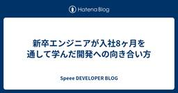
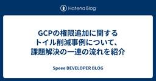
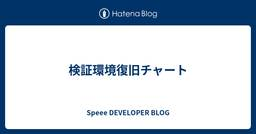
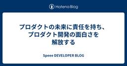
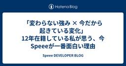
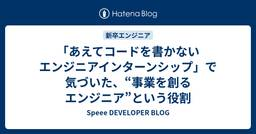

Speee DEVELOPER BLOG
https://tech.speee.jp/
Speee開発陣による技術情報発信ブログです。 メディア開発・運用、スマートフォンアプリ開発、Webマーケティング、アドテクなどで培った技術ノウハウを発信していきます！
フィード

新卒エンジニアが入社8ヶ月を通して学んだ開発への向き合い方
 25
25
Speee DEVELOPER BLOG
※この記事は、2025 Speee Advent Calendar6日目の記事です。 昨日の記事はこちら はじめに 挨拶と現在の業務内容について 皆さんこんにちは。株式会社Speeeに25卒で入社いたしました、エンジニアの白戸と申します。社内では「ユリタニ」のあだ名で呼ばれています。 4月に入社してから私は弊社の運営する不動産一括査定サイト「イエウール」の開発に携わっております。具体的には、イエウールのユーザ様に向けたUI実装や、ご参画いただいている企業様に向けた新規機能などの実装を行っています。 この記事で伝えたいこと この記事を通じて皆さんにお伝えしたいことは、「エンジニアが技術だけでなく…
13時間前

GCPの権限追加に関するトイル削減事例について、課題解決の一連の流れを紹介 27
Speee DEVELOPER BLOG
※この記事は、2025 Speee Advent Calendar5日目の記事です。 昨日の記事はこちら こんにちは、デジタルトランスフォーメーション事業本部 開発基盤グループの長谷川です。 まず私が従事している開発基盤グループについて簡単に紹介しますと、開発基盤グループは、「SRE観点とPlatform Engineering観点を併せ持ち、デジタルトランスフォーメーション事業本部の各プロダクトと開発組織のQCDを最適化するために問題解決・技術コンサルティング・仕組みづくりを主導すること」をミッションとして、複数事業部のインフラ基盤の構築やサービス品質の保守を実施している部署になります。 デ…
2日前

検証環境復旧チャート 36
Speee DEVELOPER BLOG
※この記事は、2025 Speee Advent Calendar 4日目の記事です。 昨日の記事はこちら こんにちは。株式会社Speee DX開発基盤グループに所属している川田と申します。 この記事では、開発組織全体の生産性向上を目指す中で、私たちの問い合わせ対応リードタイムがボトルネックになっていたという課題に対し、過去の対応を振り返って調査・対応手順を体系化した取り組みについてお話しします。その結果、対応の属人化解消の見込みが立ち、さらなる改善への足がかりができました。 DX開発基盤グループとは DX開発基盤グループは、DX事業本部のプロダクト開発・運用において共通して必要となる基盤を各…
3日前

プロダクトの未来に責任を持ち、プロダクト開発の面白さを解放する 37
Speee DEVELOPER BLOG
※この記事は、2025 Speee Advent Calendar3日目の記事です。 昨日の記事はこちら こんにちは！ イエウールというプロダクトでエンジニアをしている林崎です。 新卒でSpeeeに入社して今年で3年目になりますが、役割が広がって事業戦略を主体的に獲得する必要性を理解し、長期的な視点を持てるようになったことで、開発に対する向き合い方が大きく変わり、プロダクト開発の面白さを再発見することができました。 業務に少しずつ慣れて、日々の開発業務にどこか物足りなさを感じている方がいれば、この経験が少しでも参考になれば幸いです。 短期だけを見ていたことで開発がつまらなくなった 入社して2年…
4日前

「変わらない強み × 今だから起きている変化」 12年在籍している私が思う、今Speeeが一番面白い理由 24
Speee DEVELOPER BLOG
こんにちは。Speeeのレガシー産業DX領域で中途採用をしている菅沢です。 この記事は Speee Advent Calendar 2025 の2日目の記事です。 この記事では、新卒から約12年 Speeeに関わり続けてきた私が、 「今のSpeeeは過去10年以上で最も面白い瞬間を迎えている」 と本気で感じている理由を、まとめてみようと思います。 結論としては、以下の一文に尽きます。 10年以上変わらず培ってきた「開発の強み」が、AI時代の後押しをうけ事業の変革期と重なる瞬間が「今」だから、これまでで一番面白い。 目次 はじめに 変わらないこと 「価値設計から関わる」開発スタイルは、10年以上…
5日前

「あえてコードを書かないエンジニアインターンシップ」で気づいた、“事業を創るエンジニア”という役割 38
Speee DEVELOPER BLOG
この記事は2025 Speee Advent Calendarの1日目の記事です！ こんにちは、Speeeでエンジニア新卒採用を担当している田中（@sei_ryo10）です。本日から2025 Speee Advent Calendarが始まりました。 昨年度もAdvent Calendarを開催し、社内外ともに非常に大きな反響をいただきました！2024年のAdvent Calendarも、よければあわせてチェックしてみてください。 レガシー産業の構造そのものを変えにいく事業づくりの現場で、エンジニアが事業のど真ん中にどのように関わっているのかを25日間でお届けしていきます。 Speeeを最近知…
6日前

組織全体の開発スループットを劇的に向上させた「AIプランナー」とは？ 〜Speeeが実践する3つのTipsと新しい開発チームのかたち〜
Speee DEVELOPER BLOG
こんにちは、PM（プロダクトマネージャー）の嶋です。 今年は開発未経験のプランナー（PM・PO含む）がAIの力を借りてエンジニアなしで開発をする、というプロジェクトを行いました。AIなしの時代に戻れないほど業務体験が変わってしまったのでこれまでの取り組みを記事にしました。 まず、こんな経験はないでしょうか…？ 「ちょっとした修正なのに、実装までに時間がかかる」 「バグの問い合わせがあった時に、エンジニアに確認しないと仕様がわからない」 「施策の効果を見るためのSQLのクエリ作成をエンジニアに依頼している」 「もっとたくさんリリースしたいけどエンジニアのリソースがない」 プロダクト開発チームが抱…
1ヶ月前
リフォームDX事業部の開発組織紹介 〜ミッション編〜
Speee DEVELOPER BLOG
こんにちは、SpeeeのリフォームDX事業部で開発部長をしている佐藤です。今回は第二弾として、より具体的な事業部のミッションと、開発組織が目指す姿についてお伝えしたいと思います。
1ヶ月前
AIキャリアの新たなフロンティア。なぜ「未解決な産業課題」が最高の挑戦機会なのか？
Speee DEVELOPER BLOG
こんにちは、SpeeeのリフォームDX事業部で開発部長をしている佐藤です。 先日、弊社の事業部長の上野が事業全体の今後のビジョンについて語った記事を先日公開しました。 tech.speee.jp 上野の記事を読んで、事業の大きなビジョンは伝わったかと思います。今回はそのビジョンを技術で実現する開発部長である私から、 エンジニアの視点から見た我々リフォームDX事業部で働く魅力についてお話ししたいと思います。 ここ5年間くらいでSaaSという素晴らしい方法論が普及し、世の中は本当に便利になりました。一方で、その“正解”が広く知られるようになった今、同じフィールドでキャリアを築いていくことに、もどか…
2ヶ月前
AIで30兆円市場を変革― SpeeeのAI戦略「AX」が切り拓く産業変革とは
Speee DEVELOPER BLOG
こんにちは。SpeeeDX事業本部で事業部長を務めています、上野です。先日、Speeeは「Speee、リフォーム・不動産DX領域においてAI時代の新コンセプト『産業AX（AIトランスフォーメーション）』を策定し、住まいの情報インフラを革新する10の挑戦を始動。」というリリースを発表しました。本記事では、この挑戦の核となる「AI戦略」について、私の想いをお話しします。
3ヶ月前
現場から広がるAI活用の連鎖 〜Speeeにおける生成AI活用の実践と学び〜
Speee DEVELOPER BLOG
こんにちは、Speeeでビジネス領域のAIガバナンスプロジェクトのオーナーをしております長山と申します。普段はバントナー事業部で、クライアント企業のDXに伴走支援しております。ガバナンスの「次のステップ」として、現場のAI活用を促進するための新たな取り組みを始めました。これらの取り組みを通じて、個々の社員のAI活用の工夫を、『組織全体のナレッジ』として共有し、ボトムアップでのAI活用文化を醸成することを目指しています。
3ヶ月前
AIを組織の競争力に変える、SpeeeのAIガバナンスデザイン
Speee DEVELOPER BLOG
こんにちは、Speeeでビジネス領域のAIガバナンスプロジェクトのオーナーをしております 長山と申します。普段はバントナー事業部で、クライアント企業のDXに伴走支援しております。また本記事でご紹介する取り組みでは、日々、「AIをもっと活用したい」という現場の声と「安全に使おう」という組織としての要請の間でバランスを取る挑戦をしています。 皆さんの組織でも、「このAIツールは使っていいの？」「この情報を入れても大丈夫？」「新しいAIツールを試したいけど申請方法が分からない...」といった声がありませんか？ ツールの進化が加速度的に進む今、組織としてAIをどう取り入れていくかは、単なるIT管理の問…
6ヶ月前
技術とビジネスをつなぐエンジニアとしての一歩を踏み出せる、Speeeのインターンで得た"視野の広がり"
Speee DEVELOPER BLOG
初めまして！Speee内定者の福井です。26卒の就活生としてSpeeeの2daysインターンに参加しました。 私は、長期インターンも含めて約10社のIT企業のインターンに参加しましたが、Speeeのインターンは特に視野が広がった印象的な機会でした。 この記事では、 「エンジニアとして社会でどう価値を出すか」 という本質に触れたインターンでの学びを、私の実体験をもとにお話しします。技術力に自信がある人にも、まだ不安がある人にも、何かの参考になると嬉しいです！ 「技術が好き」だけでは足りないと気づかされた 1日目：焦りと、1on1で得た自分の立ち位置 2日目：設計の解像度と、スピードの両立 インタ…
7ヶ月前
AI時代の市場価値を高める: 「二つの解像度」を磨くSpeee DXエンジニアの成長環境
Speee DEVELOPER BLOG
どうも。デジタルトランスフォーメーション事業本部 (以下、DX事業本部)エンジニアリングマネージャーの石井です。 日々の業務の中で、生成AIをはじめとするAI技術の進化が、我々の事業や働き方に急速な変化をもたらしていることを肌で感じている方も多いのではないでしょうか。 単なる技術トレンドとして捉えるだけでなく、事業開発を担う我々自身がこの変化にどう向き合い、未来を切り拓いていくべきか。本記事では、「今、我々がAI時代の変化をどのように捉え、今後AIとどう向き合っていこうとしているか」、私の考えを言語化したいと思います。 ※ なお、本記事において「エンジニア」と記載する場合は、特に断りのない限り…
8ヶ月前
Copilot Agent modeを活用してaws-sdk-goパッケージをメジャーアップグレード
Speee DEVELOPER BLOG
はじめに アドプラットフォーム事業部で開発を担当している室岡です。 既存のGoのOSS内で参照しているaws-sdk-goパッケージをCopilot Agent mode（以下、Agentモード）を使用してメジャーアップグレードした事例をご紹介したいと思います。 LLMを利用した開発の参考になれば幸いです。 ※ Copilotの使用法そのものの説明は割愛いたします。 開発過程 開発対象 下記のGoのアプリケーションになります。 github.com こちらは、database/sqlパッケージのAthena用ドライバです。 tech.speee.jp 他にもAthena用ドライバは存在しますが…
9ヶ月前
「良いコードレビューとは」というタイトルで「コードレビューどうしてる？ 品質向上と効率化の現場Tips共有会」に登壇しました！
Speee DEVELOPER BLOG
どうも。デジタルトランスフォーメーション事業本部 (以下、DX事業本部)エンジニアリングマネージャーの石井です。 先日行われた、コードレビューどうしてる？ 品質向上と効率化の現場Tips共有会 で「良いコードレビューとは」というタイトルで発表させていただきました。 スライドはこちらです: speakerdeck.com 登壇を振り返って 元々は社内向けに整理していた資料をZennに公開した所、思いの外たくさんの方に読んでいただきました。それがきっかけで今回、Findy様よりオファーをいただき、登壇する運びとなりました。機会をいただいたFindy様、ありがとうございました。 他登壇者の方々の発表…
9ヶ月前
Speee内定者研修：sedコマンドの歴史とBSD/GNU sedの違いを学ぶ
Speee DEVELOPER BLOG
2025年4月入社予定の竹田有真です！今は毎週30分入社前の研修*1を受けています。red-data-tools/red-datastockを題材にRubyGemsの仕組みを学ぶという研修です。クリアコードの須藤さんに説明をしてもらいながら実際に手を動かして学んでいます！ はじめに 今回は研修の中で学んだsedコマンドについて説明します。UNIXの時代から、テキスト処理のための強力なツールとして sed（stream editor）は広く使われています。何十年も前に作られたコマンドですが、今でも役に立つケースがあるので学びました。例えば、CIでテキスト変更処理を自動化するときなどに使えます。自…
10ヶ月前
Speee内定者研修：gemにはテスト関連ファイルを含めなくてもよい
Speee DEVELOPER BLOG
2025年4月入社予定の白戸 (ニックネーム: ユリタニ) です！ 最近は，毎週30分入社前の研修*1を受けています． 内容としては，gemをリリースすることを通じて， red-data-tools/red-datastockを題材にRubyGemsの仕組みを学ぶという研修です． クリアコードの須藤さんに説明をしてもらいながら実際に手を動かして学んでいます． 今回はその研修の中で学んだこととして，gemからの使用しないテスト関連ファイルの削除について説明します． はじめに この研修では，実際に手を動かして上記gemの改善しながら，gemの仕組みやOSS制作に必要な知識を学んでいます． 題材にし…
10ヶ月前
新規プロジェクトで思い切って開発を進めるためにすべき3つの準備
Speee DEVELOPER BLOG
※この記事は、2024 Speee Advent Calendar 25日目の記事です。 前日の記事はこちらになります。 tech.speee.jp はじめに こんにちは！ 2024年1月に中途でSpeeeに入社し、現在は新規プロダクト開発のプロジェクトリーダーを担当している、手塚です。 入社から半年が経過したところで、担当プロダクトのプロジェクトリーダーという役割を初めて任されることになりました。 私自身、エンジニアとしてプロジェクトをリードしていく立場になって色々と学びがありましたので、この記事ではプロジェクトリーダーとして直面した課題と、それらを解決するために取った具体的なアプローチを共…
1年前
新卒1年目エンジニアが2つのプロダクトの開発に関わって感じた「ユーザ目線で開発すること」の大切さについて
Speee DEVELOPER BLOG
※この記事は、2024 Speee Advent Calendar 24 日目の記事です。 昨日の記事はこちら: tech.speee.jp はじめに こんにちは。不動産DX事業部でエンジニアをしている24新卒の風間です。社内ではコタロウと呼ばれています。 私は新卒エンジニアながら入社してから2つの事業部の開発に携わっています。 周りの同期を見渡してもそのような人はいなく、先輩でもチラホラ見受けられる程度だったため、貴重な体験を改めて学びとして振り返ることで、これからSpeeeへ入社を考えているエンジニアの方に雰囲気等が少しでも伝われば嬉しいです。 目次はこちら はじめに イエウールとHous…
1年前
エンジニアの成長に技術力は必要条件であって十分条件ではない - 文系新卒エンジニアが大規模開発から得た技術以外の3つの成長
Speee DEVELOPER BLOG
※この記事は、2024 Speee Advent Calendar 23日目の記事です。 昨日の記事はこちら tech.speee.jp はじめに こんにちは、SpeeeのDX事業部でHousiiというサービスのアプリケーション開発をしている24新卒の北田です。大学では法学部で文系の出身でしたが、現在はReactとRailsを使用したフルスタック開発に携わっています。 入社から半年が経ったあたりで、私はサービス開始以来最大規模の新規開発のリードという機会を任されることになりました。このプロジェクトを通じて、私は「エンジニアの成長に必要なのは技術力だけではない」ということを強く実感しました。 そ…
1年前
エンジニアが事業を動かすための成果定義とは
Speee DEVELOPER BLOG
※この記事は、2024 Speee Advent Calendar 22日目の記事です。 前日の記事はこちらになります。 tech.speee.jp はじめに 初めまして、2022年度新卒でSpeeeに入社し、現在Housii（ハウシー）という完全会員制の家探しマッチングプラットフォームの開発チームでエンジニアをしている大金と申します。 今回は、自分の実体験を元にした記事を書いてみました。 開発物を日々沢山リリースしているものの、イマイチ「事業の成果」に向き合えていないと感じるエンジニアの方々にとって、少しでも今後の動き方の参考となる記事になれば幸いです。 目次はこちら はじめに なぜか「事業…
1年前
新規事業開発を加速させるために重要なエンジニアの4つの価値観
Speee DEVELOPER BLOG
※この記事は、2024 Speee Advent Calendar21日目の記事です。 昨日の記事はこちら tech.speee.jp 自己紹介 初めまして、23新卒エンジニアの真保です。 学生の頃はCGの研究や組み込みハードウェア開発を行なっており、 web開発は未経験で入社しました。 サマーインターンにおいて「ユーザのどんな課題を解決したいか？」を徹底的に深掘り、 本当に価値あるプロダクトを作ることに強くこだわるカルチャー共感し入社を決めました。 現在では、事業責任者と開発戦略について話したり、 数年後の事業の行先を見据えながらアーキテクチャの意思決定をしたりしています。 この記事について…
1年前
事業会社マーケターが陥りがちな成果創出のアンチパターン
Speee DEVELOPER BLOG
※この記事は、2024 Speee Advent Calendar20日目の記事です。昨日の記事はこちら tech.speee.jp みなさんこんにちは。 2021年に新卒で入社し、現在はすまいステップという不動産一括査定サイトのマーケティングを担当している八重樫（@yegs_）です。ポーカーが好きです。 入社から一貫してマーケティングに携わっており、中でも広告運用、グロースハック等のプロモーション領域に（たまに溺れながら）潜っている人間です。 今回の記事では、目標達成を阻むアンチパターンについて、ご紹介していきます。 ↓社会人1,2年目に書いたアドベントカレンダー記事はこちら tech.sp…
1年前
新卒3年目エンジニアがマネジメントに挑戦することで見えた事業と個人の成長をつなぐ道
Speee DEVELOPER BLOG
不動産DX事業部でエンジニアをしている 22 新卒の高島（@takatea_dayo）です。本ブログでは新卒 3 年目エンジニアが実際にマネジメントに挑戦して直面した課題と、それを通じて得た重要な学びをまとめます。特に、事業成果と個人の成長を結びつけるられたことなどにも触れながら、この半年を振り返ります。将来エンジニアとしてマネジメントにも挑戦したいと考えている方に少しでも参考になれば嬉しいです。
1年前
なんとなく生きてきた私が、Speeeで手ごたえをつかんだ話
Speee DEVELOPER BLOG
※この記事は、2024 Speee Advent Calendar18日目の記事です。 昨日の記事はこちら tech.speee.jp はじめに エンジニア新卒採用担当の伊藤です。2年前に、10年ぶり2回目の転職をしてSpeeeに入社しました。 初めての就職先を希望や不安や葛藤を抱えながら探している学生のみなさんと対峙している中で、「わかるわかる」と共感の日々を過ごしています。 学生のみなさんから出てくる葛藤に過去の自分を重ねながら振り返ってみようと思います。これを読んで「あ、案外大丈夫そうだな」と安心してもらえるとうれしいです。 はじめに 前職のはなし 肩書と中身の乖離にどんどん辛くなってい…
1年前
実務未経験のエンジニアがユーザ思考を身につけるためのhow to
Speee DEVELOPER BLOG
※この記事は、2024 Speee Advent Calendar17日目の記事です。 昨日の記事はこちら tech.speee.jp はじめに こんにちは。24卒エンジニアの木下です。 学生時代は個人開発や友達と高専プロコンなどのハッカソンに参加しており、実務経験などは特にない状態でSpeeeに入社しました。 現在はイエウールという不動産売却の一括査定サービスの開発をしております。 この記事では、個人開発・ハッカソンなどの開発経験しかなかった自分が入社して、自分自身の課題の解像度が上がった話を書ければと思っています。 実務経験がなく、業務のイメージがつかない学生さんに読んでいただけると幸いで…
1年前
プロジェクトのあるべき姿が見えていない時、どう前に進めていくか
Speee DEVELOPER BLOG
はじめに 不動産業界向けの新規プロダクトを開発しているspeee_shinoです。新卒で入社してから9ヶ月が経ちました。Speeeに入社するまでは、個人でアプリやサイトをリリースしながら技術を学んできましたが、実際に開発現場に入ってみると、開発チームだけでは解決できない、あるいは気づくことすら難しい問題が多く存在することを痛感しました。 そうした中で、プロダクトの課題解決に向き合うプロダクトマネージャー（以下、PdM）の行動を間近で見る機会を得たことは、私にとって非常に大きな学びとなりました。特に、課題やステークホルダーが複雑で、「こうあるべき」という理想の姿がまだ明確になっていない状況下での…
1年前
査定依頼のマッチングシミュレーションをチーム開発で作成した話
Speee DEVELOPER BLOG
※この記事は、2024 Speee Advent Calendar15日目の記事です。 昨日の記事はこちら tech.speee.jp 2024年に新卒としてSpeeeに入社しました、中島です。すまいステップというサービスのエンジニアとして開発にあたっています。今回は、査定依頼のマッチングシミュレーションをチーム開発で作っていく過程で得た学びを書こうと思います。チームでの開発経験がまだなくこれから始めるという方に、チーム開発はこういうものだというイメージをつけていただけるとありがたいです。 マッチングとは すまいステップのマッチング すまいステップは、不動産会社が設定した条件に基づき、家を売り…
1年前
新卒エンジニアが「開発だけ」をやめたとき、仕事は圧倒的に面白くなる
Speee DEVELOPER BLOG
※この記事は、2024 Speee Advent Calendar14日目の記事です。 昨日の記事はこちら tech.speee.jp はじめに こんにちは！2023卒で入社し、今はイエウールという自社サービスのWebサービスの開発をしている、木俣と申します。周囲からはきまっちゃんと呼ばれています！この記事が、「Speeeのエンジニアになると「開発」の他になにができるようになるか」知りたい方に届くと嬉しいです。 突然ですが、Speeeでは、働くうえでの指針となる15のカルチャーが存在しています。 Speee Style - 株式会社Speee これは、Speeeメンバーが持つ共通の価値観であり…
1年前